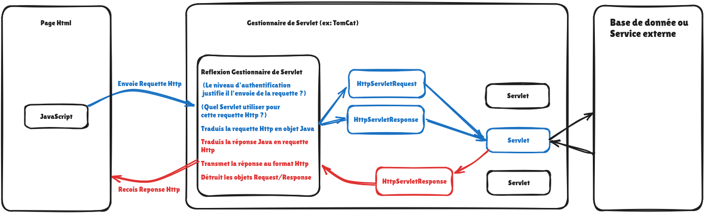

Passez la souris sur les termes soulignés en bleu pour afficher leur explication vulgarisée.

Une servlet ne s’occupe jamais directement de la connexion physique ni des ports réseau d'une machine, car elle n'ouvre aucune socket pour écouter les messages qui arrivent sur Internet. En réalité, elle confie entièrement cette tâche technique à un conteneur comme Apache Tomcat, qui se charge de capter les requêtes des internautes, de les traduire en objets Java faciles à manipuler, puis de les transmettre à la servlet pour qu'elle puisse simplement exécuter son code et renvoyer la bonne page web.
HttpServletRequest (la commande du client) et HttpServletResponse (la feuille blanche où écrire la réponse).Une servlet ne possède pas de méthode principale main(). C'est le serveur qui contrôle entièrement son existence à travers 3 étapes :
init()) : Exécutée une seule et unique fois lors de la création de la servlet. Elle sert aux préparatifs lourds (ouvrir la connexion à la base de données, lire des fichiers de réglages).service() / doGet() / doPost()) : Exécutée à chaque requête entrante. La servlet reçoit la demande, fait le calcul et écrit la réponse.destroy()) : Appelée juste avant l'extinction du serveur pour fermer proprement les connexions et libérer la mémoire.Une servlet est neutre vis-à-vis du format de données : elle renvoie simplement un flux d'octets. C'est le développeur qui spécifie l'étiquette appelée type MIME :
response.getWriter() (avec le type text/html).application/json.response.getOutputStream() avec le type application/pdf ou image/png.Le moteur d'exécution (ex. Tomcat, Jetty). C'est lui qui héberge la servlet, gère les connexions Internet, applique la sécurité et lance les calculs au bon moment.
Le message envoyé par le navigateur pour demander une ressource (ex. « Donne-moi la page /produits » ou « Enregistre ce formulaire »).
Le point d'attache virtuel entre deux machines communicantes sur un réseau, composé d'une adresse IP et d'un numéro de port (ex. 80 pour le Web).
Est un protocole de communication de la couche application qui permet l'échange de contenus en ligne, tels que des pages web, des images ou du texte.
Les principales méthodes HTTP sont :
• GET : Demander la récupération d'une ressource.
• POST : Envoyer des données pour créer ou modifier une ressource.
• PUT : Remplacer ou mettre à jour une ressource.
• DELETE : Supprimer une ressource.
• HEAD : Demander uniquement les en-têtes d'une ressource.
• PATCH : Appliquer une modification partielle à une ressource.
L'aiguillage du serveur : associer une adresse demandée (ex. /panier) au programme Java spécifique chargé de la traiter.
Un composant dont il n'existe qu'un seul exemplaire actif en mémoire pour toute l'application, partagé par tous les utilisateurs.
Un thread distinct (ou fil d'exécution séparé) est une séquence d'instructions exécutée de manière autonome et indépendante par le processeur, au sein d'un même programme, afin de permettre l'exécution simultanée de plusieurs tâches sans bloquer les autres.
L'étiquette standardisée qui indique au navigateur ce qu'il reçoit pour savoir comment l'ouvrir (ex. une vidéo, une page web ou un document PDF).